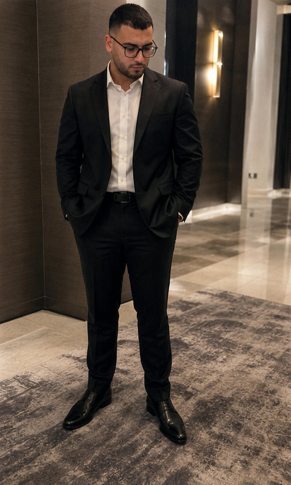

About Me

Hello! I'm Muath Mostafa, an Information Technology student with a concentration in Cybersecurity at William Paterson University. I enjoy learning how technology works and using what I learn to build useful projects.
My interests include computer systems, network security, Linux, and software development. I like exploring new tools and improving my technical skills through hands-on work.
Education
I study Information Technology with a concentration in Cybersecurity at William Paterson University. My coursework and projects help me build a foundation in computing, networking, and security.
Technical Interests & Skills
I'm interested in cybersecurity, system administration, networking, and full-stack development. Some of the tools and technologies I have worked with include:
| Technology or Topic | How I Used It | Related Work |
|---|---|---|
| HTML5 | Built pages with headings, paragraphs, images, and navigation links. | Personal Website |
| CSS3 | Styled page layouts and made the website adjust to smaller screens. | Responsive Website |
| Linux | Worked with a Linux virtual machine for installation and command-line practice. | Virtualization Lab |
| Database Design | Created ER diagrams to show entities, attributes, and relationships. | Database Coursework |
Career Goals
My goal is to continue developing my skills and gain practical experience in information technology and cybersecurity. I hope to contribute to projects that solve real problems and help make systems more reliable and secure.